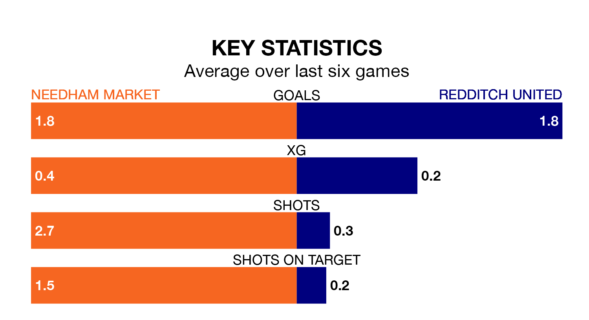

Needham Market host Redditch United in Tuesday's late match at Bloomfields looking to bounce back from defeat last time out in Southern League Premier Central.
Needham Market, who sit top of the league after 22 games, fell to a 0-4 home defeat to Kettering Town on Saturday.
They face a Redditch side who also lost their last match, a 4-2 defeat to Coalville Town, and who sit fourth in the table.
With 43 goals in 22 games so far this season, Needham Market are scoring more than average in the league with 2.0 goals per game. And they are conceding fewer than average, letting in 16 goals at a rate of 0.7 per game.
Redditch are also above average scorers, with 1.7 goals per game, compared to a league average of 1.5. They have conceded 1.4 goals per game.
The hosts are in good form in Southern League Premier Central, with four wins and a draw from their last six games.
With five wins and one loss over that period, United's form is slightly better – they have taken 15 points from 18, compared to Needham Market's 13.
In the last three years, Needham Market and Redditch have played each other on four occasions. They won one each, and they drew twice.
On average, Needham Market scored 0.8 goals and Redditch 1.0 in those matches.
Their last meeting was on March 14, when Needham Market won 1-0 at home.
Updated: 11:31, 09/01/24